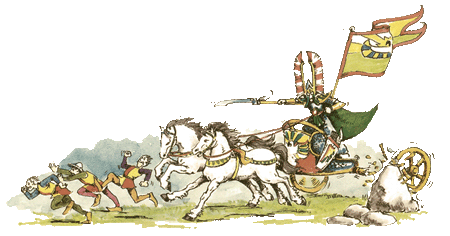

|
Modellezés

Romok
készítése - Ezen cikk alapján bárki
elkészíthet otthon romokat, leomlott falakat, de
akár bonyolultabb tereptárgyakat is.
Tereptárgyak:
a hordó - Fantasy hordókészítési útmutató.
Új
szobák Warhammer Questhez - Ha követed
az itt leírtakat rövid idõ alatt tudsz új
termeket és folyosókat kreálni a Warhammer
Questhez játékhoz.
Házépítés
- Részletes útmutató modell-házak készítéséhez.
Hogyan
fessünk ûrgárdistát - Komplett útmutató
az ûrgárdisták kifestéséhez, egészen az
alapoktól.
Hogyan
fessünk skavent - Szintén egy minden részletre
kiterjedõ festési útmutató, ezúttal a patkányfajzatokhoz.
A
figurák talpainak díszítése - Ez elég
bõ lére eresztett leírás, mely megpróbál segíteni
abban, hogy hogyan dobhatjuk fel a modellek
talpait különbözõ díszítésekkel, tereptárgyakkal.
Figurafestési
útmutató - Komplett leírás az alapoktól
kezdve a leggyakoribb festési techniká- kig! Elsõsorban
kezdõknek íródott, de a haladók is találhatnak
benne érdekes részeket.
Jó barkácsolást! - Rincewind
|